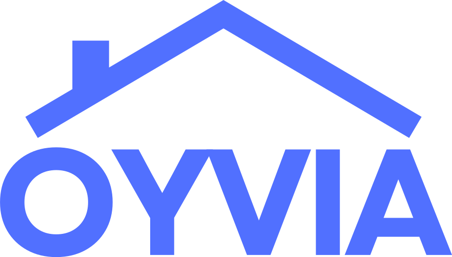

Les valeurs exactes utilisées dans le produit et sur le site. Toutes
viennent de css/tokens.css — aucune couleur n'est écrite
ailleurs dans le code, donc cette page fait foi.
Une seule couleur porte la marque. Elle sert aux boutons d'action, aux liens, au focus clavier, aux chiffres mis en avant et aux lueurs de fond. Tout le reste est neutre. Si une animation doit retenir une seule teinte, c'est celle-là.
La valeur CMJN est une conversion directe, sans profil : elle dépanne pour un aperçu, elle ne remplace pas un calage imprimeur.
Chaque statut existe en trois intensités : la teinte pleine (pastilles, points, barres), la teinte pâle (fond d'étiquette) et la teinte sombre (texte sur cette étiquette). Ne jamais écrire le texte dans la teinte pleine sur le fond pâle : le contraste ne passe pas.
Ces teintes identifient les plateformes dans le calendrier et la messagerie. Ce ne sont pas des couleurs Oyvia : elles appartiennent aux marques concernées et ne servent qu'à les désigner. À n'employer que si un plan montre réellement un calendrier ou une boîte de réception multicanale.
Les six effets qui reviennent dans toute l'interface. Les valeurs sont données telles qu'elles sont écrites dans le code.
radial-gradient(ellipse at center,
rgba(81,112,255,.22), rgba(81,112,255,.06) 42%,
transparent 68%)
fond #0B1020 +
radial-gradient(ellipse 60% 50% at 50% 0%,
rgba(81,112,255,.28), transparent 70%)
linear-gradient(180deg, #F2F4FF, #FFFFFF 70%)
0 8px 22px rgba(81,112,255,.28)
au survol : 0 14px 34px rgba(81,112,255,.36)
0 6px 20px rgba(13,25,55,.08)
relief marqué : 0 18px 44px rgba(13,25,55,.12)
linear-gradient(90deg, #C4CEFF, #6B85FF)
Geist (Vercel, licence SIL Open Font, gratuite) en graisses
300 à 700, et Geist Mono pour les valeurs chiffrées. Les grands titres sont
en 700 avec un interlettrage serré de −0,035 em ; c'est ce resserrage
qui donne à la marque sa densité.
Rien n'a d'angle vif. Les boutons et les étiquettes sont des pilules ; les cartes ont un rayon franc de 14 à 28 px selon leur taille.